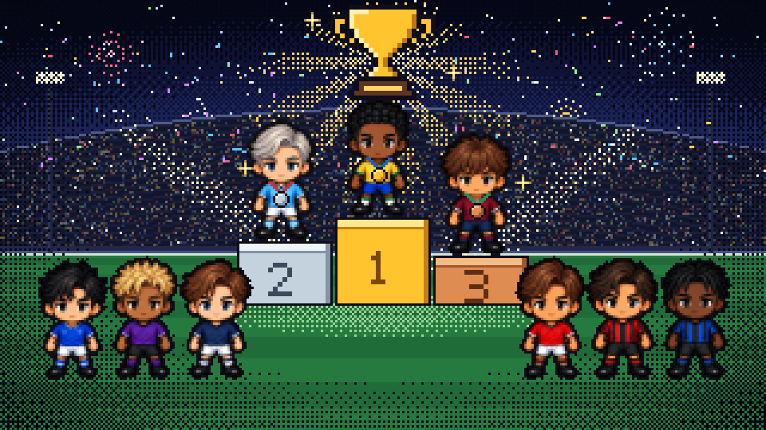
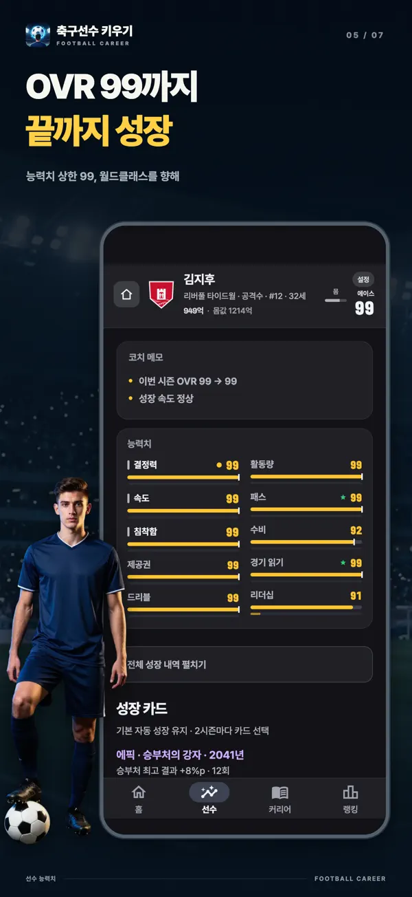
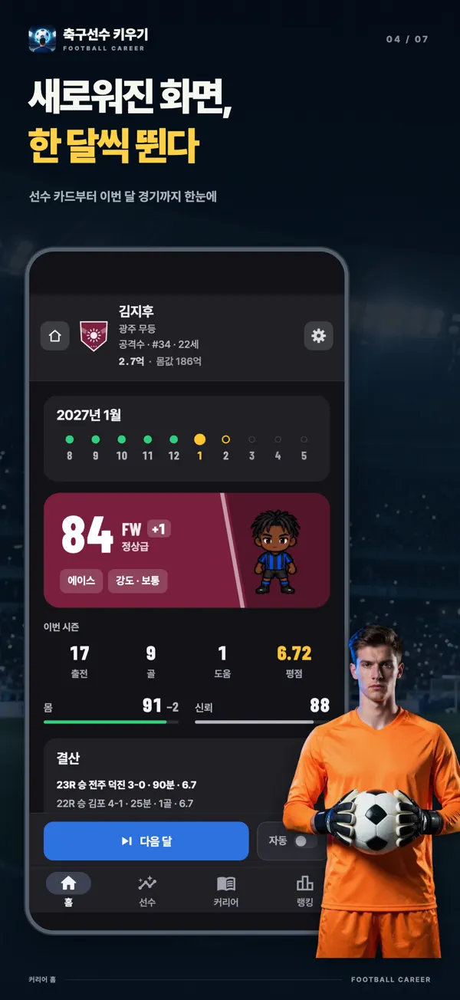
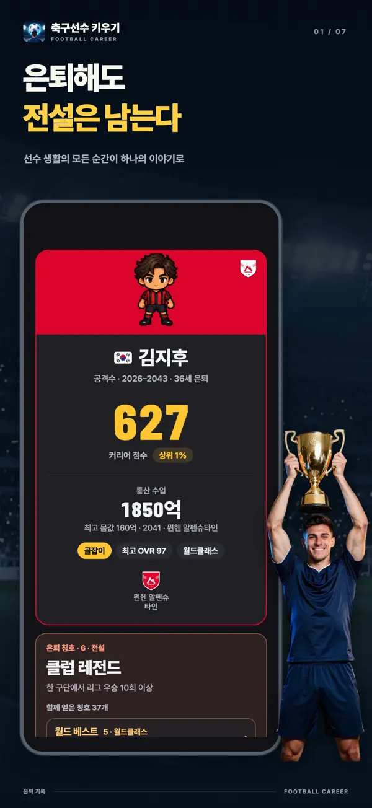
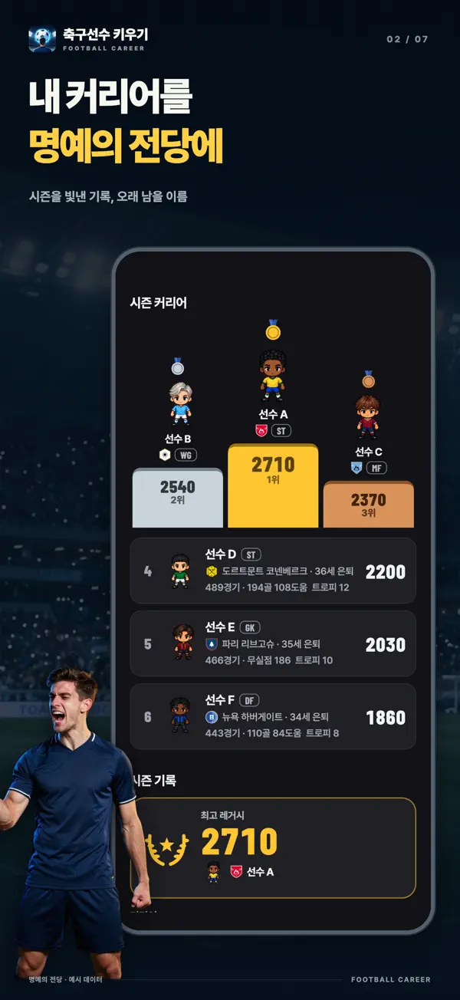
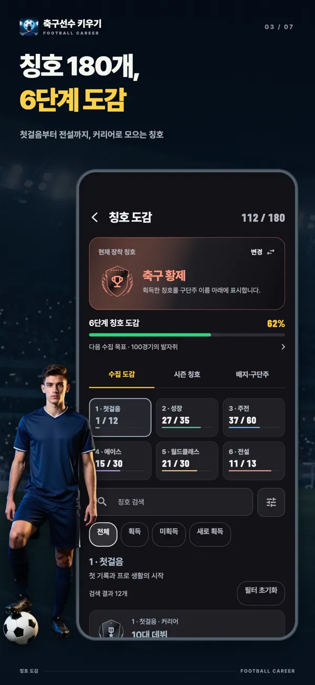
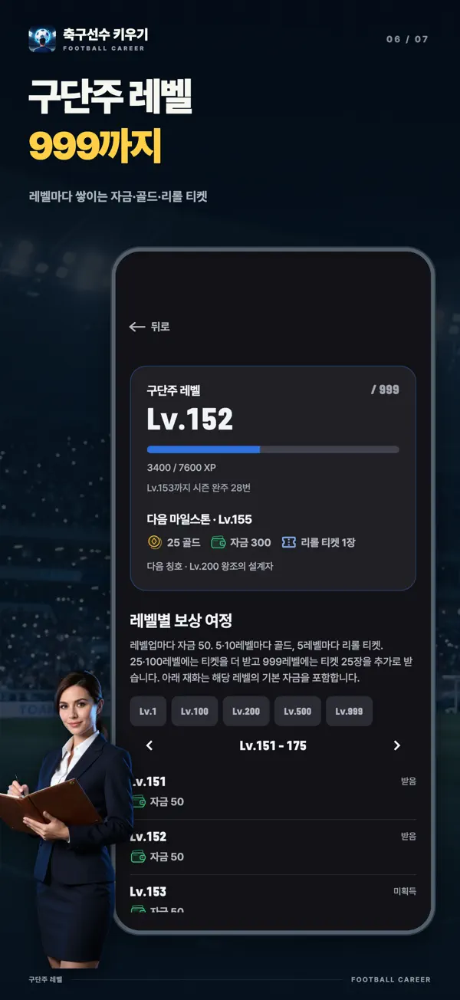
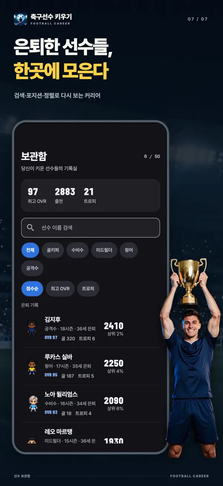

- YT Lab
- Simulator Karier Sepak Bola

Simulator Karier Sepak Bola Satu kartu bisa mengubah kariermu
Setiap dua musim, pilih satu dari tiga kartu pertumbuhan dengan kelangkaan yang sama. Mau langsung menaikkan atribut, membuka batas tersembunyi, atau memenuhi tantangan untuk hadiah lebih besar? Kembangkan satu pemain dari tim junior pada usia tujuh belas hingga pensiun dalam simulasi karier sepak bola ini.
Pilih pertumbuhan berikutnya
Penyerang usia 27 tahun OVR 96Setiap kartu bisa diacak ulang sekali. Kelangkaannya tetap sama.
Kartu dan perhitungannya sama dengan di aplikasi. Coba momen ketika Penyerang bintang berusia 27 tahun mendapat putaran paling langka, Legend. Acak ulang dan pengambilan berikutnya memakai kumpulan kartu dan peluang yang sama dengan aplikasi. Setiap percobaan dimulai lagi dengan pemain yang sama.

Gratis diunduh, dengan pembelian dalam aplikasi. Tersedia untuk iPhone dan iPad dengan iOS 15 ke atas serta Android 7.0 ke atas.
Dua musim sekali. Tiga kartu. Satu pilihan.
Atribut berkembang otomatis seiring kamu bermain. Kartu pertumbuhan memberi pilihan tambahan. Saat memulai dan setiap dua musim setelahnya, pilih satu dari tiga kartu dengan kelangkaan sama dan kelompok efek berbeda. Makin langka, makin kuat efeknya. Pilihan pertamamu dijamin Epik.
Langsung naik
Atribut naik begitu kartu dipilih. Fokus Membuahkan Hasil memberi atribut inti +6 dan batas +3. Menutup Celah menambah masing-masing 4 pada atribut inti dan pendukung terendah.
Buka batas kemampuan
Setiap atribut punya batas tersembunyi tempat pertumbuhan otomatis berhenti. Sedikit Potensi, Potensi Terbuka, dan Terobosan Potensi menaikkan batas itu. Kartu bisa menaikkannya hingga 95.
Raih hadiah lewat performa
Pemburu Gol memberi Penyelesaian +1 tiap 5 gol. Bintang Laga menambah atribut +2 tiap 2 MOM. Siap Naik Kelas memberi atribut inti +8 setelah 30 penampilan. Hadiahnya harus kamu perjuangkan di lapangan.
Ada yang didapat, ada yang dikorbankan
Sprint Eksplosif menukar Duel udara −3 dengan Kecepatan +8. Bakat Iblis memberi batas inti +12 dan atribut +10, tetapi atribut pendukung turun 3. Setiap keuntungan ada harganya.
Perpanjang waktu di lapangan
Masa Puncak Kedua mengurangi penurunan akibat usia menjadi separuh selama tiga musim dan memperpanjang karier 2 tahun. Api Terakhir menaikkan tiga atribut inti +6, tetapi kamu pensiun di akhir musim itu.
Acak ulang gratis
Tidak cocok dengan kartunya? Acak ulang satu per satu. Kelangkaannya tetap sama, dan kartu baru berasal dari kelompok efek yang berbeda dari dua kartu lainnya.
Dari bangku cadangan menuju Ballon d’Or
Kamu tidak langsung jadi pemain inti di divisi utama. Lewati tim junior dan tim cadangan, rebut tempat dari bangku tim utama, lalu bidik Pemain Terbaik Dunia yang memilih pemain terbaik setiap musim. Pilihan kartu dan catatan tiap musim menentukan seberapa jauh kamu melangkah.
- 17tahun
Tim junior
Mulai di tim junior pada usia tujuh belas. Paket Awal Akademi memungkinkanmu mulai sejak usia lima belas.
- 19paling lambat
Tim cadangan
Naik ke tim cadangan saat mendekati level tim utama atau berusia sembilan belas. Promosi ditentukan di akhir musim.
- 16–21debut sesuai liga
Dari bangku tim utama ke pemain inti
Usia debut berbeda di tiap liga. Penuhi syarat usia, atribut, dan rating musim untuk masuk tim utama. Kepercayaan pelatih menentukan menit bermain.
- Musim panassetelah musim berakhir
Transfer dan perpanjangan kontrak
Minta transfer atau pilih tawaran, lalu negosiasikan gaji dan klausul seperti Janji starter atau Klausul pelepasan bersama agen.
- 18+di tim utama
Tim nasional
Pemain tim utama berusia delapan belas ke atas berpeluang dipanggil tim nasional. Turnamen Dunia dan turnamen kontinental digelar bergantian setiap dua tahun.
- 36–41sesuai posisi
Pensiun dan jejak yang tertinggal
Secara bawaan, Sayap bermain hingga usia 36 dan Penjaga gawang hingga 41. Kartu dan peristiwa bisa memperpanjang karier, atau kamu bisa memilih pensiun lebih awal.
Main sebulan, lihat perkembanganmu
Satu musim berlangsung sepuluh bulan, dari Agustus sampai Mei, dengan 38 pertandingan. Penampilan, gol, assist, nirbobol, MOM, dan rating menghasilkan perkembangan bulanan. Setiap perubahan atribut ditampilkan dengan angka. Lanjutkan sebulan sekali atau biarkan musim berjalan otomatis.
Perkembangan sebulanMenggiring 57 → 58 +1
Bulan yang bagus bisa membuahkan Pemain Terbaik Bulanan, Tim Terbaik Bulanan, atau Tepisan Terbaik Bulanan untuk Penjaga gawang. Semuanya ditentukan catatan performa, tanpa undian tersembunyi. Di akhir musim, bidik Pencetak gol terbanyak, Tim terbaik musim ini, Pemain terbaik tahun ini, hingga Pemain Terbaik Dunia.
Tampilan game







Game sepak bola dengan sudut pandang berbeda
Karier satu pemain
Tidak ada layar skuad, papan taktik, atau anggaran transfer. Pelatih menentukan menit bermain, dan pergantian pelatih bisa mengubah tipe pemain yang dibutuhkan.
Lihat peluang sebelum memilih
Dalam situasi sepanjang musim, setiap pilihan lebih dulu menampilkan peluang tiga hasil lewat batang dan persentase. Kamu juga bisa melihat pengaruh atribut, kepercayaan pelatih, kondisi, dan kartu pertumbuhan terhadap angka tersebut.
Beda liga, beda perjalanan
Dari Inggris, Spanyol, Jerman, Italia, dan Prancis hingga Korea, Jepang, dan Amerika Selatan. Usia debut, gaji, dan kuota pemain asing berbeda di tiap liga. Semua nama liga, klub, pemain, dan pelatih adalah fiktif.
Pensiun, tetapi rekormu tetap ada
Simpan catatan sepanjang karier serta penilaian enam aspek: Kualitas, Produktivitas, Volume, Penghargaan, Trofi, dan Panggung. Lihat posisimu dibandingkan 20.000 karier yang disimulasikan dengan aturan game. Karier yang selesai masuk peringkat mingguan, bulanan, keseluruhan, serta Hall of Fame musiman.
Pertanyaan umum
- Apakah gratis?
- Gratis diunduh dan dimainkan hingga pensiun. Kartu pertumbuhan dan acak ulangnya juga gratis. Kamu bisa memilih membeli Hapus iklan, Paket posisi, Paket Awal Akademi, Paket pendukung, emas, dan Tiket lempar ulang. Peluang undian atribut awal sama, baik dengan jatah gratis, iklan, maupun Tiket lempar ulang.
- Bisa dimainkan tanpa internet?
- Karier berjalan dan tersimpan di perangkat, jadi bisa dimainkan offline. Peringkat, pembelian, penggunaan emas, dan pemindahan perangkat memerlukan internet.
- Bisa dimainkan di PC atau browser?
- Game ini berupa aplikasi untuk iPhone, iPad, dan Android. Tidak ada versi browser; halaman ini hanya menyediakan percobaan kartu pertumbuhan.
- Posisi apa saja yang tersedia?
- Penjaga gawang, Bek, Gelandang, Sayap, dan Penyerang. Penjaga gawang dan Penyerang gratis; tiga posisi lainnya dibuka lewat Paket posisi. Tiap posisi punya tujuh gaya bermain, total 35, semuanya gratis.
- Berapa karier yang bisa dimainkan sekaligus?
- Tiga slot karier memungkinkanmu mengembangkan tiga pemain sekaligus. Kewarganegaraan menentukan liga pertama dan tim nasional.
- Apakah ada pemain atau klub sungguhan?
- Tidak. Semua liga, klub, pemain, dan pelatih dalam game adalah fiktif.
- Apakah namaku terlihat di peringkat?
- Karier yang selesai masuk peringkat, tetapi kamu bisa menonaktifkannya kapan saja. Nama yang kamu ubah sendiri hanya ditampilkan kepada publik dengan persetujuanmu.